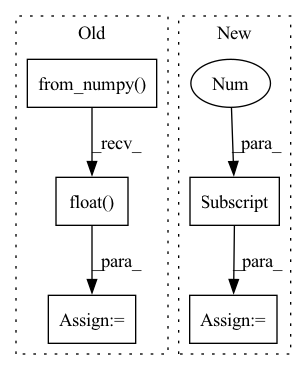

Pattern ID :19290
Before Change
assert y_heatmap.shape == (*self.output_shape, self.num_keypoints)
label_heatmaps.append(y_heatmap)
self.label_heatmaps = torch.from_numpy(np.asarray(label_heatmaps)).float()
self.label_heatmaps = self.label_heatmaps.permute(0, 3, 1, 2)
@typechecked
def __getitem__(self, idx: int) -> HeatmapExampleDict:After Change
sigma=self.output_sigma
)
assert y_heatmap.shape == (1, self.num_keypoints, *self.output_shape)
label_heatmaps[idx] = y_heatmap[0]
self.label_heatmaps = label_heatmaps
In pattern: SUPERPATTERN
Frequency: 6
Non-data size: 5
Instances Fragment ID: 62771775
Project Name: danbider/lightning-pose
Commit Name: 749b5836567981f339c2368e698b3c17358ac12f
Time: 2021-12-02
Author: nicholasg101@gmail.com
File Name: pose_est_nets/datasets/datasets.py
M Class Name: HeatmapDataset
N Class Name: HeatmapDataset
M Method Name: compute_heatmaps(1)
N Method Name: compute_heatmaps(1)
M Parent Class: BaseTrackingDataset
N Parent Class: BaseTrackingDataset
M File Name: pose_est_nets/datasets/datasets.py
N File Name: pose_est_nets/datasets/datasets.py
M Start Line: 258
M End Line: 274
N Start Line: 259
N End Line: 292
Before Change
x_test = dataset.prepare("test", col_set="feature")
index = x_test.index
x_test = torch.from_numpy(x_test.values).float()
x_test = x_test.to(self.device)
self.sfm_model.eval()
with torch.no_grad():After Change
index = x_test.index
self.sfm_model.eval()
x_values = x_test.values
sample_num = x_values.shape[0]
preds = []
for begin in range(sample_num)[::self.batch_size]:
if sample_num-begin<self.batch_size: Fragment ID: 62771785
Project Name: microsoft/qlib
Commit Name: 64b7748033326b0aaa3c4c907ccd9b2d353d553d
Time: 2020-11-25
Author: haouyw2@gmail.com
File Name: qlib/contrib/model/pytorch_sfm.py
M Class Name: SFM
N Class Name: SFM
M Method Name: predict(2)
N Method Name: predict(2)
M Parent Class: Model
N Parent Class: Model
M File Name: qlib/contrib/model/pytorch_sfm.py
N File Name: qlib/contrib/model/pytorch_sfm.py
M Start Line: 415
M End Line: 427
N Start Line: 420
N End Line: 445
Before Change
reproTool = reproTools[dataset_name]
num_cameras = imgs_orig.shape[0]
imgs = torch.from_numpy(imgs_orig).cuda().float() .permute(0,3,1,2)
points3D_net = jarvisPredictor(imgs, reproTool.cameraMatrices.cuda(), reproTool.intrinsicMatrices.cuda(), reproTool.distortionCoefficients.cuda())
After Change
imgs_orig = sample[0][0]
img_size = imgs_orig[0].shape
num_cameras = imgs_orig.shape[0]
dataset_name = sample[-2][0]
reproTool = reproTools[dataset_name]
file_name = sample[-1][0]
imgs = imgs_orig.cuda().float().permute(0,3,1,2) Fragment ID: 62771851
Project Name: jarvis-mocap/jarvis-hybridnet
Commit Name: 327b43a36cc8aa4995c6e50842b02f3577a1e241
Time: 2022-04-28
Author: jarvismocap@gmail.com
File Name: jarvis/analysis/analyze.py
M Class Name: AnonimousClass
N Class Name: AnonimousClass
M Method Name: analyze_validation_data(5)
N Method Name: analyze_validation_data(5)
M Parent Class:
N Parent Class:
M File Name: jarvis/analysis/analyze.py
N File Name: jarvis/analysis/analyze.py
M Start Line: 28
M End Line: 52
N Start Line: 22
N End Line: 82
Before Change
assert y_heatmap.shape == (*self.output_shape, self.num_keypoints)
label_heatmaps.append(y_heatmap)
self.label_heatmaps = torch.from_numpy(np.asarray(label_heatmaps)).float()
self.label_heatmaps = self.label_heatmaps.permute(0, 3, 1, 2)
@typechecked
def __getitem__(self, idx: int) -> HeatmapExampleDict:After Change
sigma=self.output_sigma
)
assert y_heatmap.shape == (1, self.num_keypoints, *self.output_shape)
label_heatmaps[idx] = y_heatmap[0]
self.label_heatmaps = label_heatmaps
Fragment ID: 62771802
Project Name: danbider/lightning-pose
Commit Name: 5d465d1e196cb4047ae50344297b460b26baaea3
Time: 2021-12-02
Author: nicholasg101@gmail.com
File Name: pose_est_nets/datasets/datasets.py
M Class Name: HeatmapDataset
N Class Name: HeatmapDataset
M Method Name: compute_heatmaps(1)
N Method Name: compute_heatmaps(1)
M Parent Class: BaseTrackingDataset
N Parent Class: BaseTrackingDataset
M File Name: pose_est_nets/datasets/datasets.py
N File Name: pose_est_nets/datasets/datasets.py
M Start Line: 258
M End Line: 274
N Start Line: 259
N End Line: 292
Before Change
ir_file = os.path.join(self.ir_files_dir, ir_file)
if ir_file.endswith(".mat"):
data= io.loadmat(ir_file)
IR = torch.from_numpy(data[self.mat_dict_key]).view(-1).float()
else:
IR, _ = torchaudio.load(ir_file)
IR = IR.view(-1)
IR = IR[:self.max_reverb_len]After Change
IR, rate = torchaudio.load(ir_file)
if IR.size(0) == 2:
IR = IR[0]
if rate != self.ir_rate:
transformed = torchaudio.transforms.Resample(rate, self.ir_rate)(IR.view(1,-1))
Fragment ID: 62771818
Project Name: shangeth/wavencoder
Commit Name: ef13a183eda6e006e80057c8bc49676a771a098e
Time: 2021-02-25
Author: shangethrajaa@gmail.com
File Name: wavencoder/transforms/reverberation.py
M Class Name: Reverberation
N Class Name: Reverberation
M Method Name: load_IR(1)
N Method Name: load_IR(1)
M Parent Class:
N Parent Class:
M File Name: wavencoder/transforms/reverberation.py
N File Name: wavencoder/transforms/reverberation.py
M Start Line: 18
M End Line: 25
N Start Line: 19
N End Line: 27
Before Change
mask = torch.zeros_like(image[:, :1, :, :])
else:
logger.info("InteractiveSeg run with prev_mask")
mask = torch.from_numpy(prev_mask / 255).unsqueeze(0).unsqueeze(0).float()
pred_probs = self.predictor(image, clicks, mask)
pred_mask = pred_probs > 0.5
pred_mask = (pred_mask * 255).astype(np.uint8)After Change
input_point = []
input_label = []
for click in clicks:
x = click[0]
y = click[1]
input_point.append([x, y])
input_label.append(click[2])
Fragment ID: 62771828
Project Name: sanster/lama-cleaner
Commit Name: a6aec566d963e67c17c0871dca1c89d26e1cdcaa
Time: 2023-04-06
Author: cwq1913@gmail.com
File Name: lama_cleaner/plugins/interactive_seg.py
M Class Name: InteractiveSeg
N Class Name: InteractiveSeg
M Method Name: forward(4)
N Method Name: forward(4)
M Parent Class: BasePlugin
N Parent Class: BasePlugin
M File Name: lama_cleaner/plugins/interactive_seg.py
N File Name: lama_cleaner/plugins/interactive_seg.py
M Start Line: 242
M End Line: 264
N Start Line: 48
N End Line: 75